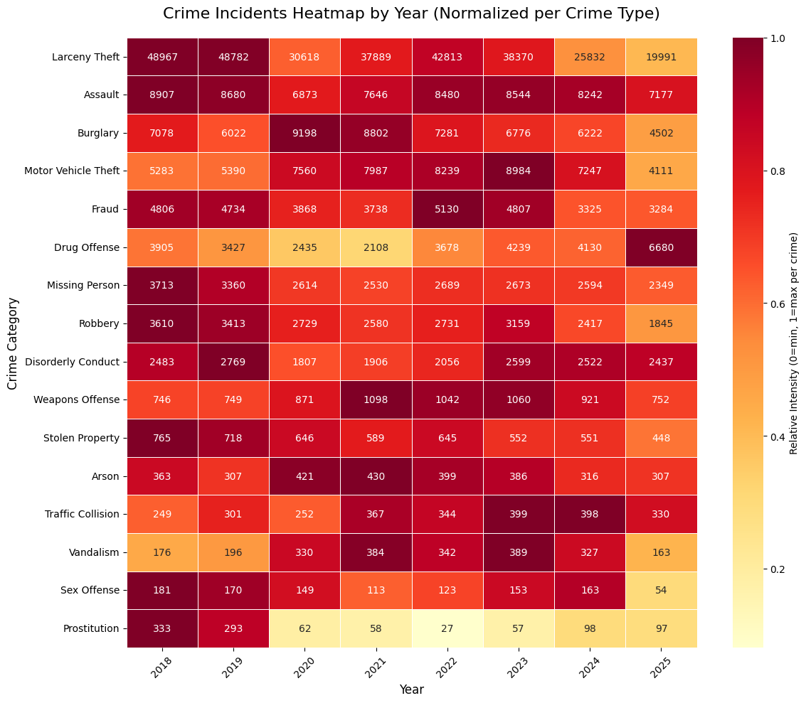

San Francisco · Data Portfolio
San Francisco's crime landscape has shifted dramatically over the past two decades, shaped by urban change, policy, and geography. This portfolio explores those patterns through data — uncovering when, where, and what type of crime defines the city.
Crime in SF has been falling, but the story is more nuanced than the numbers suggest.

Total reported incidents per year across all crime categories in San Francisco (2003–2018). The downward trend after 2008 coincides with broader national patterns, though individual categories tell more varied stories.
Certain offenses follow a rhythm dictated by the hour of day.
Each bar represents the average number of incidents for a given crime type at a specific hour of the day. Use the legend to show or hide individual categories and hover over bars for exact counts.
Prostitution clusters reveal how geography shapes urban crime.
Each marker on the map represents a reported prostitution incident. The animation plays through years chronologically — use the playback controls to pause or navigate. Zoom and pan freely to explore neighborhood-level patterns.